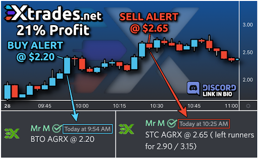
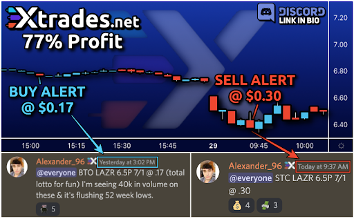

Stock alerts are a great way to stay informed about the market. They can help you make better investment decisions and protect your investments from large fluctuations that could harm their value. Stock alerts can also be an excellent tool for day traders and investors who want to take advantage of short-term opportunities in the market.
What Are Stock Alerts, And How Do They Work?
Stock alerts are notifications that are sent to you when there is a change in the stock market that you may be interested in. They can help you stay informed about the market and make better investment decisions.
For example, let's say you're interested in investing in Apple stock. You could set up an alert so that you would be notified whenever the price of Apple stock changes. This way, you would always know what was going on with the stock and could make decisions accordingly.
There are different types of stock alerts that you can set up. Some common ones include price alerts, volume alerts, and news alerts. Price alerts will notify you whenever the price of a stock changes. Volume alerts will notify you whenever the volume of trading for a stock changes. News alerts will notify you whenever news about a company could impact the stock price.
You can set up stock alerts through most online brokerages. You simply need to log into your account and go to the settings or preferences section. From there, you should be able to find the option to set up alerts. Alternatively, some websites and apps offer stock alert services.
Stock alerts can be beneficial for investors. They can help you stay informed about the market and make better investment decisions.
Why You Should Use Stock Alerts To Improve Your Investing Strategy
- It can be challenging to keep track of all the different stocks you're interested in. Stock alerts can help by sending you notifications whenever you need to know about a change in the stock market. One reason is that they can help you stay informed about the market.
- Another reason why stock alerts can be helpful is because they can help you find individuals with similar trading styles. If you're new to investing, it can be helpful to find someone who trades similarly to you so that you can learn from them. Stock alerts can help you find these people by sending notifications when someone buys or sells a stock you're also interested in.
- Better understand building your risk exposure and critical risk management by paying attention to the position sizing, target prices, and stop losses on the alerts. Stock alerts can also help understand key risk management. By paying attention to position sizing, target prices, and stop losses on the alerts, you can better understand how to manage your risks.
- Lastly, stock alerts can help you better understand building your risk exposure and critical risk management. You can learn more about managing your risks by paying attention to position sizing, target prices, and stop losses on the alerts.
How To Set Up Stock Alerts For The Stocks You're Interested In
Now that we've gone over some of the reasons you should use stock alerts, let's discuss how you can set them up.
As we mentioned earlier, most online brokerages will allow you to set up stock alerts. You simply need to log into your account and go to the settings or preferences section. From there, you should be able to find the option to set up alerts.
Alternatively, some websites and apps offer stock alert services. Some popular ones include Stock Alerts Pro and Stock Alerter.
You can also rely on XTrades Stock Alerts to keep you up-to-date with the market.
When setting up your alert, you will need to specify what kind of alert you want and for which stock you want to receive the alert. As we mentioned earlier, some common alerts include price, volume, and news alerts.
You will also need to specify how you want to receive the alert. Some options include email, text messages, or push notifications. Choose the option that works best for you.
The Benefits Of Using Stock Alerts
If you're an active investor, you know that timing is everything. Stock alerts can give you the information you need to make split-second decisions and get in on the action while it's still hot. But what are the other benefits of using stock alerts? Let's take a look.
Stock Alerts Can Help You
Stay on top of the latest news and developments affecting your stocks
- Monitor your portfolio for changes
- Set up price targets for buying or selling
- Get alerted when a stock reaches your target price
- Stay disciplined with your investing strategy
Examples Of When Stock Alerts Can Be Helpful
- When a stock is about to go public: Stock alerts can help know when a company is about to go public. This can help you get in on the ground floor of an investment. Also, if you are interested in a particular company, you can set up an alert to notify you when the stock price goes up or down.
- When there is a change in the market: Stock alerts can also help know when there is a significant change in the market. This can help you adjust your investment strategy accordingly.
- When you want to buy or sell a stock: Stock alerts can also help you know when to buy or sell a stock. If you are watching a particular stock and it reaches your target price, you can set up an alert to notify you so that you can make the trade.

Tips For Getting The Most Out Of Your Stock Alert System
- Find a reputable service: There are many stock alert services out there. Some of them are more reputable than others. To get the best stock alerts for your strategy, you need to find a reliable service that will send you accurate alerts. Make sure to do your research and find a service that you can trust.
- Set up multiple alerts: You can usually set up multiple alerts with most stock alert services. This can help get a variety of information. For example, you can set up an alert for when a stock price reaches a certain level or when a market changes.
- Choose the right time frame: When you are setting up your alerts, make sure to choose the right time frame. If you want to be notified immediately, choose a shorter time frame. If you don't mind waiting a little longer, choose a longer time frame.

- Test the service: Before you commit to using a particular stock alert service, make sure to test it out. Set up an alert and see how quickly you are notified. This will help you determine if the service is right for you.
- Find specific analysts or traders to follow instead of taking every call: Stock alerts can be helpful, but don't blindly follow every alert you receive. Instead, try to find specific analysts or traders with good track records and follow their advice.
- Observe the alerts' success or failures to improve your trading capabilities: Pay attention to how successful the stock alerts are that you receive. If you notice that a particular alert is consistently leading to profitable trades, try to mimic that alert's conditions in your own trading. Conversely, if you notice that an alert consistently leads to losses, try to avoid those conditions in your own trading.
Tips For Interpreting Stock Alert Information
When you receive a stock alert, it is crucial to interpret the information correctly. Here are some tips for doing so:
Make sure to understand the terminology that is used in the alert. Stock alerts often use technical terms that may be confusing to those who are not familiar with them. If you don't understand something, make sure to look it up or ask someone who does.
- Take the time to read the entire alert. Stock alerts usually contain a lot of information, and it is important to understand all of it before making a decision.
- Don't blindly follow the stock alert. Just because an alert says to buy or sell a particular stock doesn't mean that you should do so without doing your own research first.
- Try to find multiple sources of information before making a decision. Stock alerts are just one piece of information that you should use when making investment decisions. Make sure to also consider other factors such as the overall market conditions and your own personal risk tolerance.